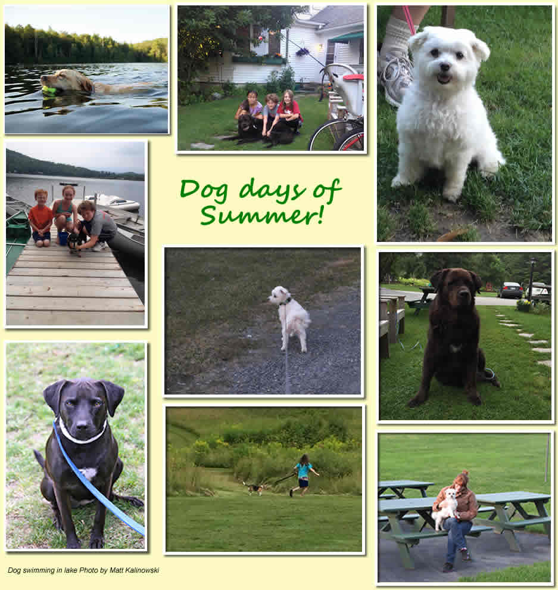

Proud to be a Pet Friendly!
The staff at Loch Lyme Lodge love pets. We know how heartbreaking it can be to have to board your pet while the rest of the family goes on vacation. We've decided to continue the long-held tradition of allowing pets to accompany their family members on their Loch Lyme getaway. We've had dogs, cats and even birds as our special guests.
Please review our pet policy to ensure a great trip with your furry friend.

Pet Policy
- In consideration of all guests, pets must be on a leash and attended to when outside a cabin.
- Owners must clean up after their pets, even while on the wooded paths.
- Owners must dispose of waste bags properly (bags are available at the main lodge or the life jacket shed next to the lake).
- Pets must be up-to-date on all vaccinations.
- Guests agree to be responsible for any and all damages caused by their pet and agree to pay for said damages.
- Pets are not allowed to be in the main swimming areas by the big stairs or near the sandy beach. There is a doggy swim area to the left of the boat dock.
- Please keep your pets off the cabin furniture. If this is not possible, bring a pet blanket or ask for one on check-in. You may be charged an extra fee if additional cleaning is necessary on check-out.
- Due to safety concerns for our employees and your pet, we will not service a cabin with an unattended pet. If unavoidable circumstances require a pet to remain unattended in a cabin while the owner is offsite, the pet must either be secured in a crate or travel carrier or you must notify the front desk that your pet is roaming freely in the cabin and what timeframe housekeeping is permitted to enter the room when the pet will not be present or when the pet is secured.
- Remember that animals can behave differently in unfamiliar surroundings. No pet should be left for more than 2 hours. It is the responsibility of the pet owner to prevent the pet from disturbing other guests. If barking becomes a problem, you may be asked to keep you dog with you at all times.
- Animals that pose a health or safety risk may not remain onsite and include those that, in the managers' discretion, are too numerous for any one cabin, cause damage to our property or that of other guests, are too disruptive, are not properly attended, or demonstrate undue aggression.
- Pets are not allowed in the main Lodge, but animals that assist the disabled, known as "Service Animals," are always welcome.